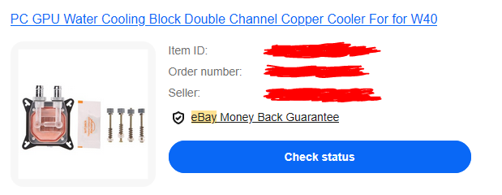
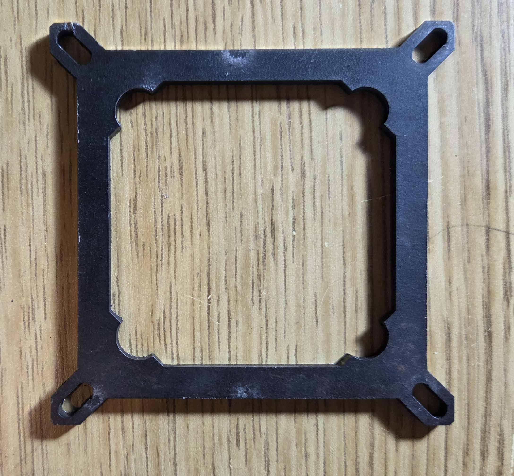
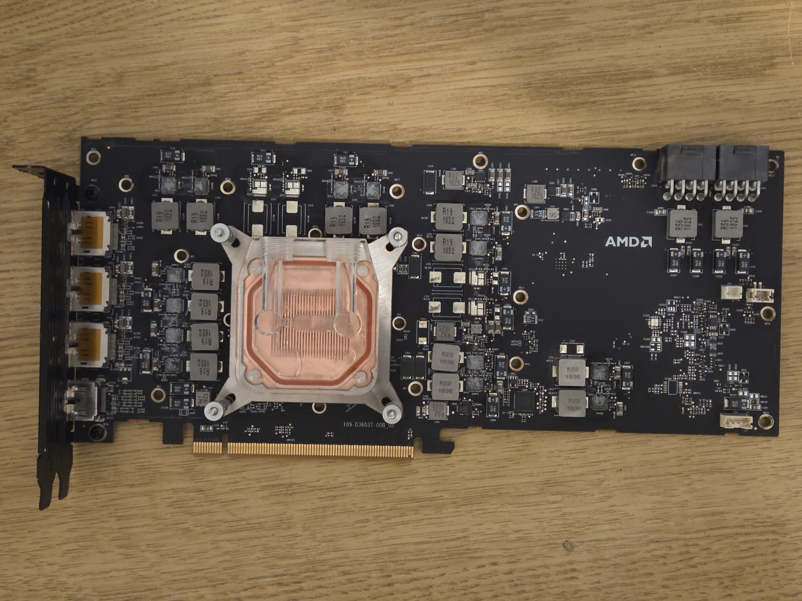

Welcome To Nikolai's Wobsite
Machining a new waterblock bracket
Feb 7, 2026:
So this whole process started when I wanted to watercool my Radeon Vii. The stock cooler the Radeon VII is ineffective and noisy in the best of times, but mine is particularly bad. The card was used for crypto currency mining for a few years and as a result the fans make a terrible rattling noise. This, combined with the pre-production cooler design that lacks a vapor chamber leads to a card that runs very hot and loud.
The first order of business was obviously to order the cheapest waterblock from ebay.
I never expected this waterblock to fit as it only supports up to 61x61mm mounting distances and the Radeon VII is 64x64 like the Vega cards. Fortunately, I recently did the fiber laser cutter training at my University's maker space so making a new mounting plate is totally doable.
To make the block fit my Radeon VII I needed to make a replacement for what I am calling the mounting plate.

I started by attempting to use QCAD. I could not be bothered to look up a tutorial and endeavored to simply click stuff that looked promising and hope the UX was not disastrously bad. Unfortunately I ended up creating some problematic geometry that the laser cutter software refused to play nice with around the screw holes. After struggling fruitlessly with the laser cutter software, the person who had booked the laser cutter for the timeslot offered to help fix my CAD, insisting that it wasn't a big deal and he could redo my design in AutoCAD in 5 minutes.
With "my" new design I was ready to actually send it to the laser. I picked a 1/8" inch thick sheet of scrap metal to cut.
As a result of following the age old saying 'measure once cut a few times' this plate did not fit. Due to the design of the waterblock the plate can't be thicker than ~2mm before it pushes the cold plate away from the main body of the block. Undeterred I returned a few days later with a new design; a tweak of the last design this time done with AutoCAD (students at my university get a free license). I was unable to find any 2mm thick steel scrap, but I did find a 1mm thick sheet.

By stacking two copies I was able to get very close to the desired 2mm thickness. Sure there's a bit of strength loss, but it's still more than rigid enough.
Here's an image of the modified waterblock mounted to my Radeon VII.
Temperatures are... underwhelming. The hotspot is ~30c hotter than the edge temperature when running ~300W though the core. For context, a delta over ~20c is considered bad. This means that even though the edge temperature is ok at around 40-45c under load the hotspot manages to hit 70-75c. Not terrible, but far from what you'd expect with a decent waterblock. I tried remounting a few times with varying mounting pressure to no avail.
Overall I consider this a success. Contact me if you are interested in the .dxf